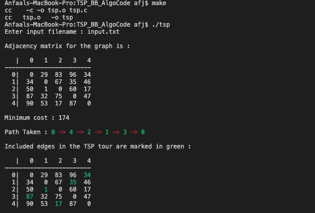
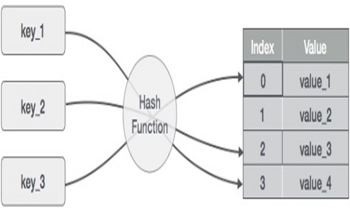
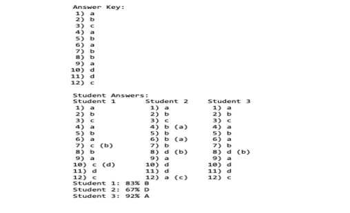
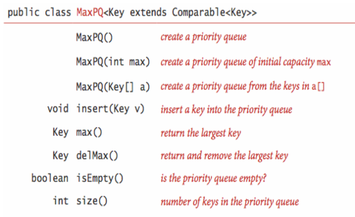
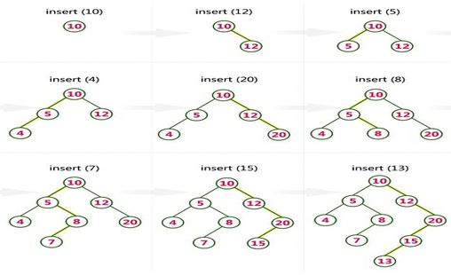

May 9, 2020
This Section provides an overview of the projects I have done independently as well as projects that revolve around assignments from Western Michigan University, feel free to contact me. This will be a place where I will be putting
in new projects!
Take a look at my GitHub for more projects!

The travelling salesman problem (also called TSP) asks the following question: “Given a list of cities and the distances between each pair of cities, what is the shortest possible route that visits each city exactly once and returns to the origin city?”.
This is what my algorithm tries to achieve using Branch and Bound. The program is done in C language, hence why it is advisable to use the program on an terminal (linux/unix systems), for best results. VS code could work too
A compilation of Web Development projects to understand the concepts of CSS, HTML5, mySQL, php. This was done in Western Michigan University, as I am currently pursuing computer science.

In this project I was required to use the concept of Hashing to manipulate data, this is a java project that I did for my data files and structure class.

Take a content document with the primary line being the measure of inquiries on a test, the second line being the responses to those inquiries on the test, the third line being what number of students took the test, and ultimately,
“the fourth line to anyway numerous understudies took the test lines” being those understudies responses to that test and read it into arrays. Find the amount of incorrect answers, their percentage grade and their letter grade
for each student. Display the answer key and the answers by students.

In this project I was required to use the concept of Priority Queues and Medians to manipulate data, this is a java project that I did for my data files and structure class.

In this project I was required to use the concept of Tree's and Binary search tress to manipulate data, this is a java project that I did for my data files and structure class. Which has immensely helped my ability to manipulate and
become an improved coder!